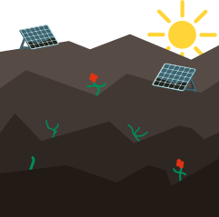

Hoe begon het?
Ooit een verouderde scheepswerf, heeft de Ceuvel een radicale transformatie ondergaan tot een groene oase.
In 2012 ontstond het idee om een oude scheepswerf in Amsterdam-Noord een nieuw leven in te blazen. Een groep enthousiaste creatievelingen, duurzaamheidsexperts en architecten bundelden hun krachten om het experiment te starten.
De voormalige scheepswerf, werd omgetoverd tot een groene broeiplaats. Oude woonboten werden verplaatst naar het land en dienden als basis voor werkruimtes. De bodem van het terrein, eerst bedekt met vuil, werd op innovatieve wijze gezuiverd met hulp van planten, ook wel helofytenfilters genoemd.

De renovatie was meer dan alleen een fysieke transformatie. Het stond symbool voor een nieuwe benadering op duurzaamheid en gemeenschap. In plaats van de scheepswerf te zien als een probleem, zagen de initiatiefnemers het als een mogelijkheid om groene technologie te demonstreren en een gemeenschap te creëren die zich inzet voor duurzaamheid.
